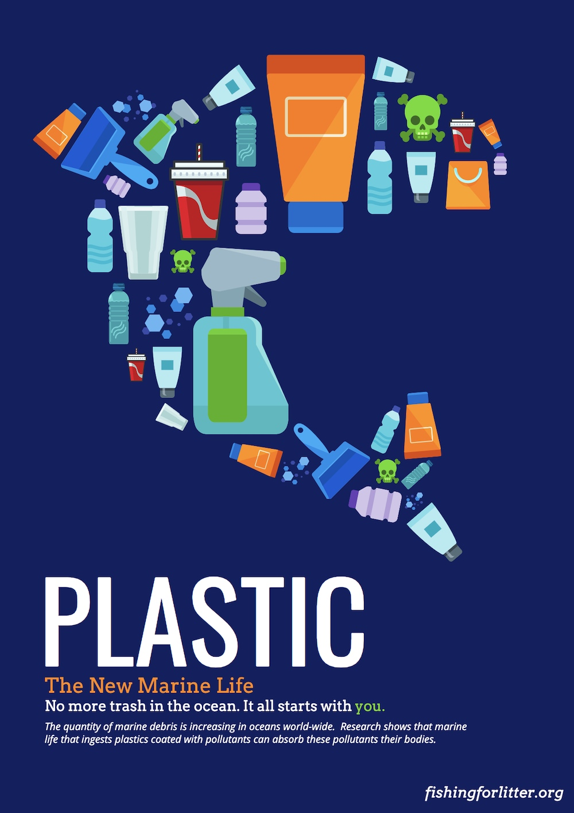
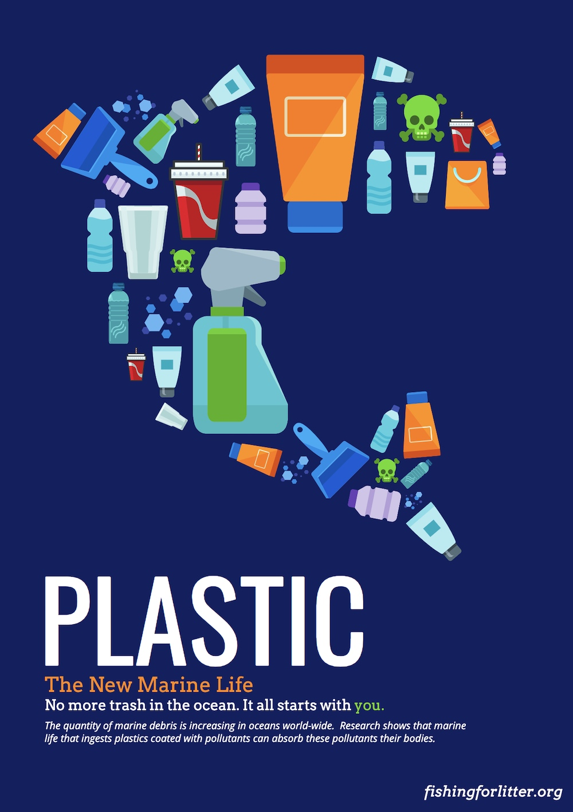
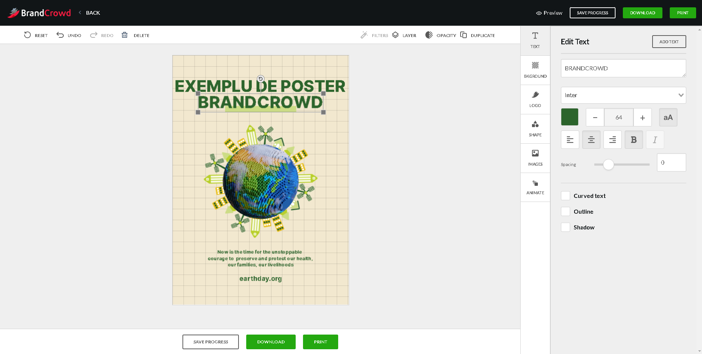
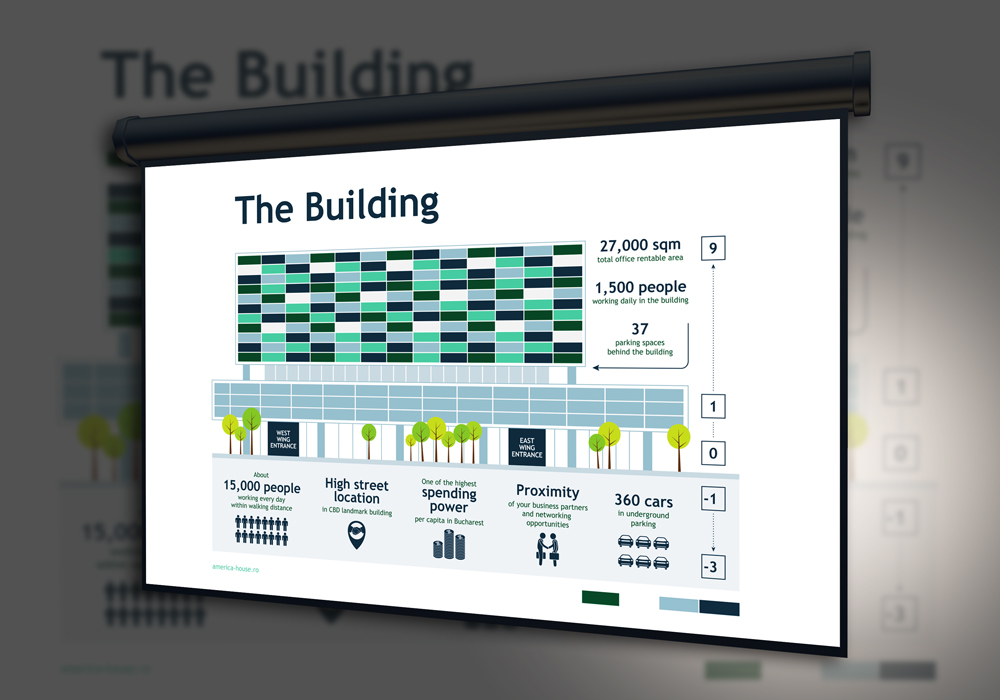
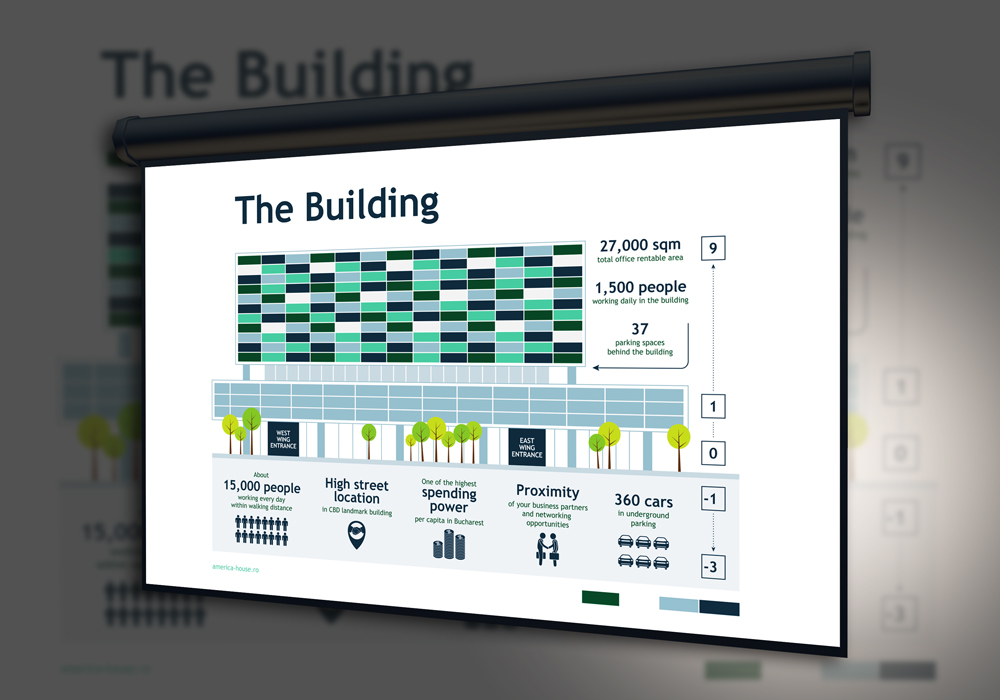
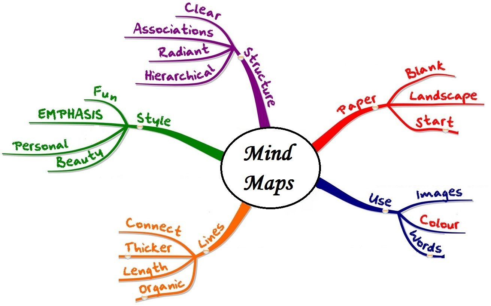

Cum creăm un poster informativ?
Un poster permite să înregistraţi activitatea / subiectul şi să o prezentaţi.
Este important ca un poster să fie organizat astfel încât să atragă atenţia spectatorilor.
- Titlul: ar trebui să fie scurt şi interesant; vizibil de la distanţă.
- Scrisul: ar trebui să fie destul de mare şi lizibil. Dacă utilizaţi computerul, nu folosiţi prea multe fonturi diferite. Scrieţi propoziţii scurte care sunt vizibile de la distanţă.
- Imaginile, fotografiile, graficele: acestea ar trebui să sprijine ceea ce aveţi de spus şi să facă posterul interesant. Limitaţi-vă la câteva mai impresionante.
- Prezentare: unde ar trebui să fie aşezate titlul, sub-titlurile, marcatorii, simbolurile, casetele, fotografiile sau imaginile? Faceţi o schiţă a posterului înainte de a începe.
Listă de verificare
 

Unde putem crea postere digitale?
Posterele, ca și infograficele, pot fi create în aplicațiile standart Office,
ca PowerPoint sau Word. Însă sunt disponibile și o varietate de platforme online pentru crearea rapidă
și șablonată a posterelor, ca
BRANDCROWD, unde sunt prezente o varietate de template-uri prestabilite,
care mai apoi pot fi modificate folosind instrumentele sugestive plasate pe panouri.


Unde putem crea postere digitale?
O prezentare electronică este o
prezentare care utilizează un instrument multimedia, cum ar fi imagini, audio,
fișiere electronice etc., care sunt transmise prin internet printr-un dispozitiv electronic
(mobil, calculator etc.). Ele sunt opusul unei prezentări personale.
Tehnologia digitală disponibilă în prezent poate contribui
la crearea de prezentări care nu sunt doar informative, ci și reutilizabile.Sugestii pentru crearea unei prezentări electronice bune
Trebuie creată o pagină principală care include titlul proiectului, numele autorului,
informațiile despre curs și numele profesorului (dacă este cazul), data și grafica corespunzătoare.
Cantitatea de text pe dispozitiv ar trebui, de asemenea, să fie limitată, în general, este de maxim șapte
rânduri.
Ar trebui furnizată o formă de tranziție de la diapozitiv la diapozitiv pentru a marca continuitatea prezentării. Grafica corespunzătoare trebuie selectată cu atenție pentru a le integra în text. Diapozitivul final trebuie să lase o impresie puternică asupra publicului; Cea mai comună este că este vorba de un rezumat al informațiilor sau de o chemare la acțiune.
În cele din urmă, legile privind drepturile de autor ar trebui respectate pentru toate textele și graficele utilizate. Prezentarea ar trebui să includă și o bibliografie și credite. 
Ar trebui furnizată o formă de tranziție de la diapozitiv la diapozitiv pentru a marca continuitatea prezentării. Grafica corespunzătoare trebuie selectată cu atenție pentru a le integra în text. Diapozitivul final trebuie să lase o impresie puternică asupra publicului; Cea mai comună este că este vorba de un rezumat al informațiilor sau de o chemare la acțiune.
În cele din urmă, legile privind drepturile de autor ar trebui respectate pentru toate textele și graficele utilizate. Prezentarea ar trebui să includă și o bibliografie și credite. 
Unde poți crea prezentări electronice?
Pe lânga clasicul PowerPoint, pe internet sunt disponibile o varietate de instrumente
pentru crearea prezentărilor, cum ar fi Canva. Canva este una dintre aplicațiile pentru web
și telefoane mobile prin excelență atunci când vine vorba de crearea de prezentări.
Canva îți dă acces la un număr incredibil de șabloane de proiectare pentru a crea prezentări
de diferite stiluri, fie ele creative sau formale,
cu teme și animații diferite pentru a face tranziția între unul și altul într-un mod original. Interfața de utilizare a Canva este sugestivă, fiind disponibile o multitudine de machete / șabloane care pot fi ulterior personalizate accesând secțiunea Elemente. Fiecare șablon include în sine o varietate de designuri pentru fiecare pagină din prezentare.
Ce este un Mind Map?
O hartă mentală (engleză, Mind map) reprezintă ierarhic
idei și concepte si ajută la o mai bună sintetizare și structurare a informației.
De obicei, un Mind map este conceput în jurul unui singur concept central reprezentat
printr-o imagine și/sau un cuvânt la care se conectează, prin intermediul link-urilor/legăturilor,
alte concepte importante, de care, la rândul lor sunt conectate ramuri cu alte concepte.
Toate aceste concepte formează o structură radială sau de foc de artificii.

Unde poți crea Mind Maps?
Unul dintre cele mai bune
instrumente online pentru crearea Mind Map-urile este MindMeister.
MindMeister oferă o modalitate de a vizualiza informațiile în hărți mentale
utilizând modelarea, oferind în același timp instrumente pentru a facilita colaborarea
în timp real, a coordona gestionarea sarcinilor și a crea prezentări.Scopul MindMeister este de a permite persoanelor să colaboreze pe o hartă mentală, unde toată lumea poate împărtăși idei, comentarii și planuri, precum și poate vota idei în timp real. MindMeister permite utilizatorilor să partajeze și să editeze hărți mentale, să lase comentarii și feedback, să atașeze fișiere, imagini, videoclipuri și să facă linkuri către surse externe, precum și interne, prin adrese URL încorporate. Hărțile mentale pot fi partajate cu colegii din interior sau din exterior printr-o invitație de colaborare prin e-mail sau printr-un hyperlink. Hărțile mentale pot fi, de asemenea, transformate în prezentări interactive.
Mind Map-urile pot fi create accesând șabloanele prestabilite din meniu și modificându-le, sau prin crearea unui mind map personalizat de la zero, apăsând pe „+”.